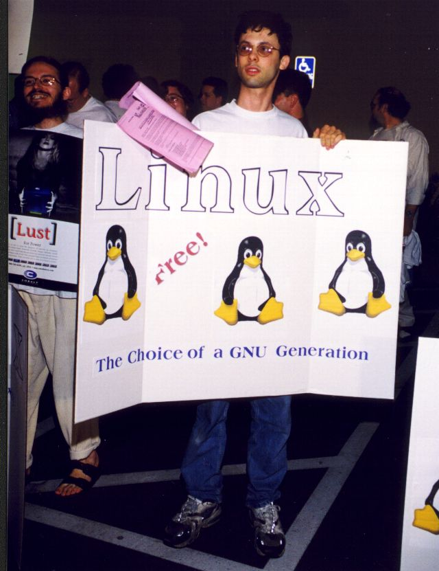
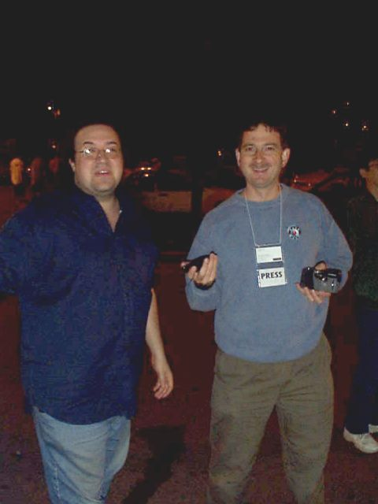
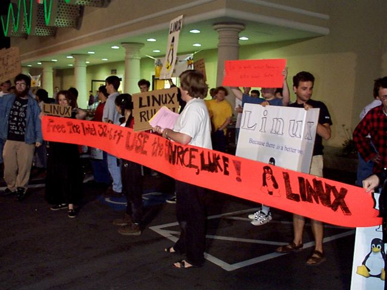
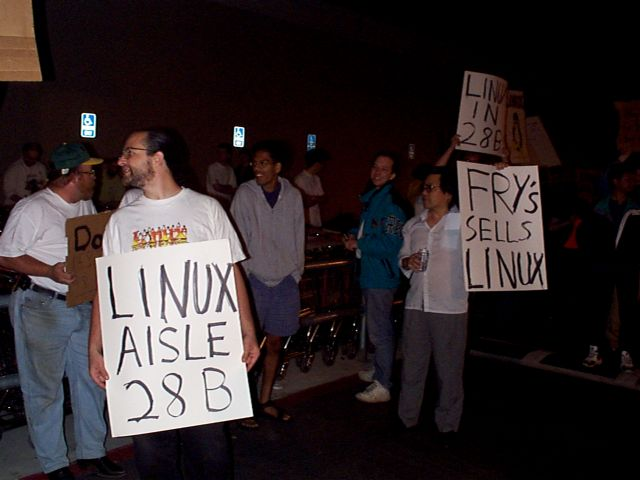
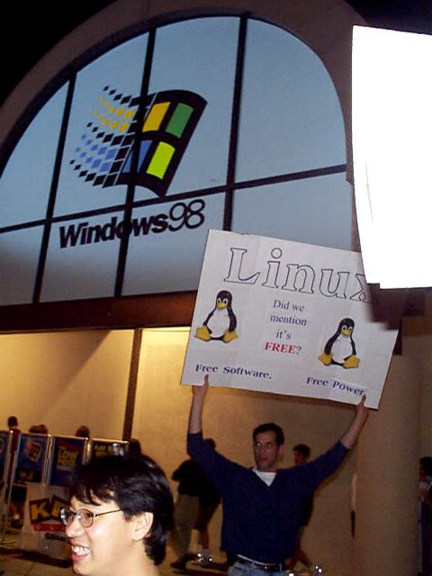
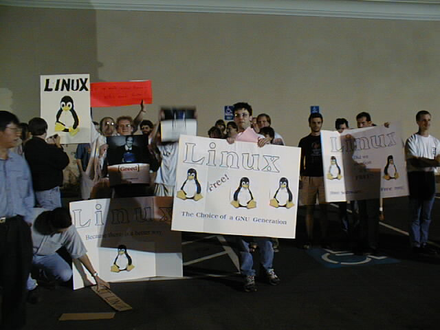

"Linux Gazette...making Linux just a little more fun!"
The Great Linux Revolt of 1998 Photo Album
Photographs by John Beale

Sam Ockman, SVLUG President

Press Interviewing SVLUG Member

Rally Members at Fry

Fry's Has Linux Signs

Linux in Front

Crowd at Fry
Copyright © 1998, Photographer, John Beale
Published in Issue 31 of Linux Gazette August 1998